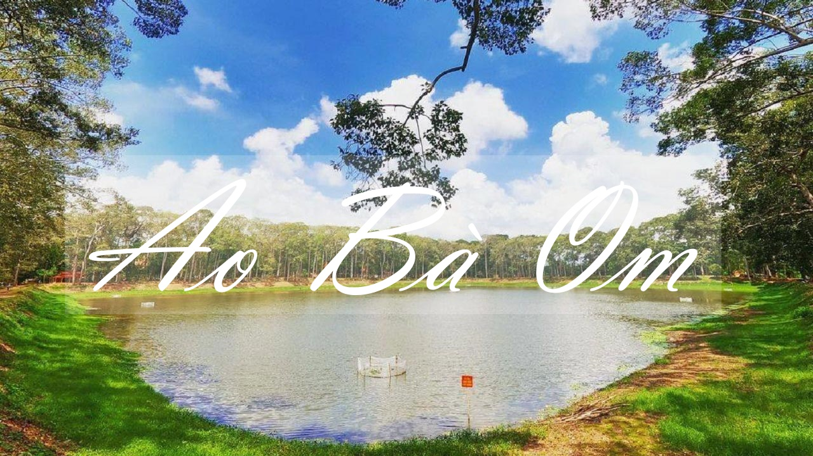

Trà Vinh là tỉnh Duyên hải Đồng bằng sông Cửu Long, tiếp giáp với các tỉnh Bến Tre, Vĩnh Long, Sóc Trăng; nằm giữa sông Tiền và sông Hậu. Trung tâm tỉnh lỵ Trà Vinh cách thành phố Hồ Chí Minh 130 km và thành phố Cần Thơ 100 km.
Tỉnh Trà Vinh có 01 thành phố, 01 thị xã và 07 huyện gồm: Thành phố Trà Vinh, thị xã Duyên Hải và các huyện Càng Long, Châu Thành, Tiểu Cần, Cầu Kè, Trà Cú, Cầu Ngang, Duyên Hải. Diện tích tự nhiên 2.391 km2, dân số trên 1,1 triệu người với 03 dân tộc chính là Kinh, Khmer, Hoa, trong đó dân tộc Khmer chiếm 30% dân số.
Với trị trí tiếp giáp biển Đông chiều dài 65 km bờ biển đã hình thành nên vùng đất Trà Vinh gồm vùng đất châu thổ lâu đời, bên cạnh vùng đất trẻ mới bồi và mạng lưới sông ngòi chằng chịt mang nặng phù sa, bồi đắp cho những vườn cây ăn trái. Trà Vinh là tỉnh mưa thuận, gió hoà, nhiệt độ trung bình từ 26 – 27 độ C, hiếm khi có bão, vì thế bất cứ mùa nào trong năm du khách cũng có thể đến miền Duyên hải này..
Các địa điểm và ẩm thực nổi bật:
Ao Bà Om
Biển Ba Động
Nhiều ẩm thực phong phú
Các ngôi Chùa
Về cảnh đẹp thiên nhiên:
Ao Bà Om

Ao Bà Om, hay Ao Vuông nằm cạnh Quốc lộ 53, thuộc phường 8 thành phố Trà Vinh (trước đây là ấp Tà Cụ, xã Nguyệt Hóa, huyện Châu Thành), cách trung tâm thành phố Trà Vinh khoảng 5 km về phía Tây Nam.
Biển Ba Động là danh thắng và địa điểm du lịch Trà Vinh nổi tiếng thuộc địa phận xã Trường Long Hoà, huyện Duyên Hải.
Về thăm những ngôi chùa đẹp ở Trà Vinh mang phong cách kiến trúc Khmer, bạn vừa được chiêm ngưỡng những công trình ấn tượng, vừa có nhiều ảnh check in độc đáo.
Trà Vinh là vùng đất nổi tiếng với cảnh vật kỳ thú, đẹp mắt và đa dạng. Chính vì vậy du khách đến đây đa phần ai cũng bị thu hút và vương vấn bởi vẻ đẹp tự nhiên tại đây. Bên cạnh đó, Trà Vinh còn là vùng đất sinh sống của 3 dân tộc chính là Khmer, Kinh và Hoa nên văn hóa ẩm thực vô cùng đa dạng.